Qué es un Índice?
Los índices son estructuras creadas en la base de datos y que permiten agilizar las consultas sobre los datos.
En los índices se graban tuplas en la forma clave – dirección, es decir, cada tupla del índice tiene el valor del campo a consultar y la dirección física de la tupla que contiene dicho valor, asemejándose al índice de un libro.
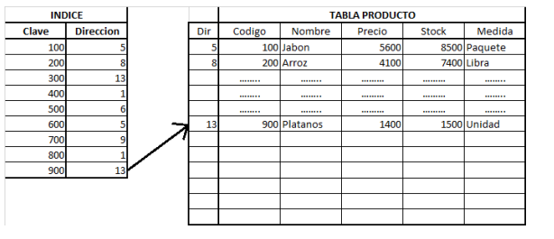
Fuente Propia
Se debe tener en cuenta que los índices aumentan el rendimiento de las consultas, pero rebajan el rendimiento de las operaciones de actualización (INSERT –
UPDATE – DELETE). Por eso, a la hora de crear índices hay que poner “en la balanza” esta situación y mirar cual conviene más.
Es importante aclarar que los índices se crean a campos de una tabla. Si se quiere agilizar la ejecución de las consultas que se hagan con condiciones sobre un campo de una tabla, se le crea un índice a la tabla por ese campo.
A continuación se procede a mostrar una serie de comandos SQL útiles para la gestión de índices en Oracle.
Para hacer las actividades se van a ir creando algunas tablas e insertándoles sus respectivos datos.
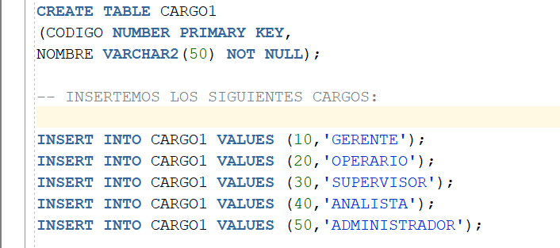
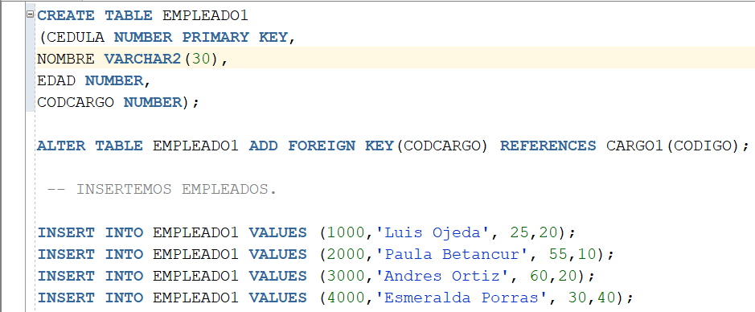
Para consultar los metadatos de los índices que tienen creados las dos tablas recién creadas, ejecutamos el siguiente comando:
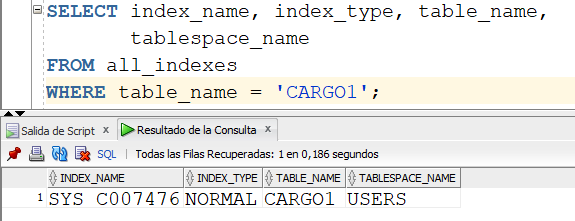
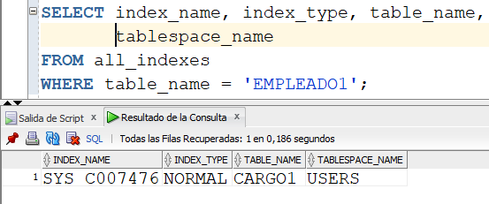
Cada tabla aparece ya con un índice creado. Recordar que cuando una tabla se crea, el motor de la base de datos crea un índice por la clave primaria. A eso se debe el nombre "extraño" que tienen los dos índices mostrados en la imagen anterior. A través de la vista llamada all_indexes, podemos observar el nombre del índice, su tipo, de qué tabla es y en qué tablespace está grabado.
Es curioso que a través de esta vista, all_indexes, no podemos saber el índice sobre qué campo fue creado. Para esllo existe otra vista, del diccionario de datos, llamada ALL_IND_COLUMNS.
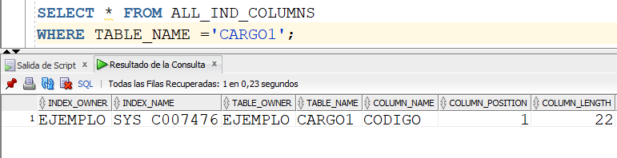
Se puede observar que el índice que tiene la tabla CARGO1 es por medio del campo CODIGO (COLUMN_NAME), el cual es la clave primaria.
Índices Únicos
Hay otro tipo de índice denominado índice único. A continuación se realizan una serie de actividades para demostrar el concepto.
A la tabla CARGO1, se le va a crear un índice único llamado in_nombre, y dicho índice es por el campo NOMBRE.
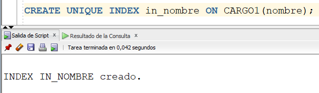
A la instrucción CREATE INDEX se le adiciona la palabra UNIQUE.
Al volver a consultar los índices que tiene creados la tabla CARGO1, aparece el nuevo índice.
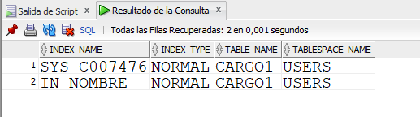
Ahora, tratemos de insertar una nueva tupla en la tabla CARGO1. La particularidad es que se va a insertar un cargo con un nombre de otro cargo que ya existe en la tabla.
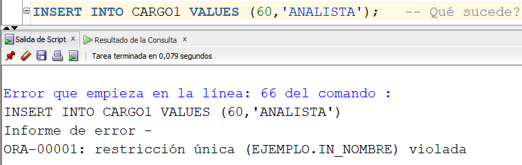
Como se puede observar, la ejecución de la inserción saca un error (ORA-00001). Esto debido a que el índice de tipo único creado anteriormente, evita que se puedan grabar varios cargos con el mismo nombre.
Los índices únicos evitan que en el campo indexado se graben tuplas con el mismo valor en él. Es otra manera de implementar un valor único en un campo, tal y como si fuera una clave primaria.
Índices Bitmap
Existe otro tipo de indice en Oracle llamado Bitmap. Se recomienda crear este tipo de indice cuando los valores de la columna a indexar no varian mucho, es decir, cuando la columna no tiene muchos valores diferentes.
A la tabla EMPLEADO1, creada anteriormente, adicionarle un nuevo campo llamado categoría, de tipo numérico. Vamos a suponer que existen empleados de 5 categorias posibles: 1, 2, 3, 4, 5. Por lo tanto, el campo categoría es candidato a crearle un indice bitmap.
Para crearle dicho índice, ejecutamos el siguiente comando.
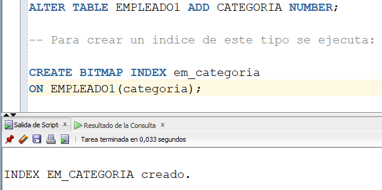
Al CREATE INDEX se le adiciona la palabra BITMAP.
Consultemos los metadatos de este nuevo índice.
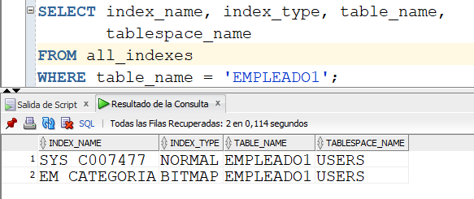
Se puede observar que el índice em_categoría, recién creado, es de tipo BITMAP.
Índice por más de un campo
Dependiendo de la consulta que se quiera hacer, si ésta es por los valores de dos campos, también es posible crear un índice con el fin de agilizar la consulta.
La instrucción sería la siguiente:
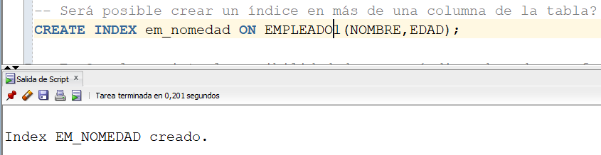
Comprobemos que el índice haya sido generado por dos campos de la tabla EMPLEADO1:
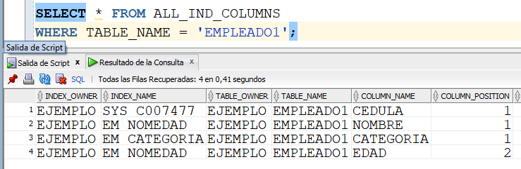
Índice basado en funciones
Con esto nos aseguraremos que la tabla tendrá, mínimo, 20000 registros.
Ahora, creemos un índice para el campo “nombre” de la tabla EMPLEADO1.
Ahora, vamos a hacer la siguiente consulta y mirar dentro del plan de ejecución si fue o no utilizado el índice para su ejecución.
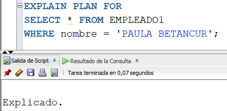
Con la anterior instrucción se genera el plan de ejecución del SELECT indicado. Si queremos mirar el plan de ejecución generado, ejecutamos lo siguiente:
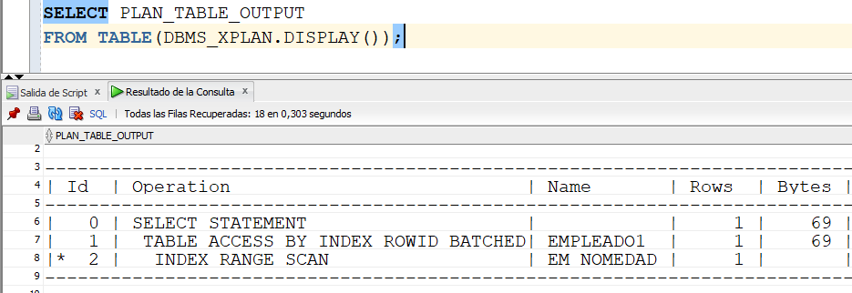
Como se puede observar, la consulta utiliza el índice creado ya que en el WHERE del SELECT se está preguntando por el nombre de un empleado.
A continuación, generemos el plan de ejecución de la misma consulta pero con un pequeño cambio, utilizando la función UPPER (convierte a mayúsculas) en el WHERE.
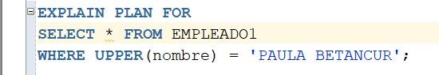
Miremos el plan de ejecución de la anterior consulta:
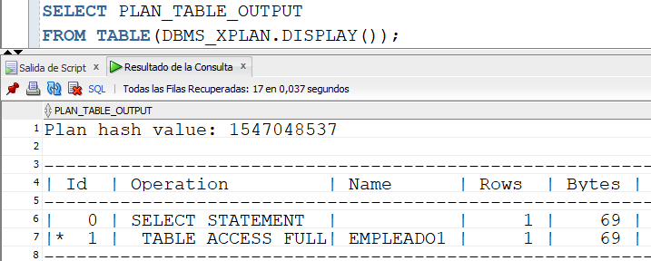
Podemos observar que para esta consulta no se usa el índice, a pesar de que estamos preguntando por el nombre de un empleado. Lo que va a ejecutar el motor es un TABLE ACCESS FULL, es decir, va a recorrer todos los registros de la tabla para encontrar el que se está buscando. Esta situación se dio porque estamos utilizando un UPPER en el campo NOMBRE en la condición.
Para obligar a que para la anterior consulta use un indice, podemos crear el siguiente:
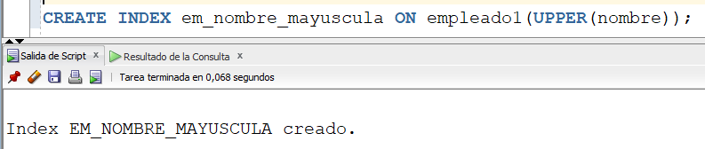
Al volver a ejecutar la última consulta, se verifica que se usó el nuevo índice (EM_NOMBRE_MAYUSCULA). En este caso, estamos implementando un índice basado en funciones, la función UPPER.
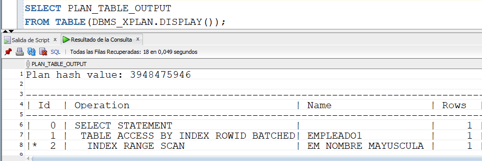
Monitoreo del uso de índices
Cuando se ejecuta una consulta, a veces es conveniente saber si la ejecución usó o no índices.
Una de las maneras de hacerlo se mostró en el apartado anterior, cuando se genera el plan de ejecución con la instrucción EXPLAIN PLAN y luego consultando el plan generado.
Pero existen otras maneras y es lo que se explica a continuación. Para hacer la explicación, se va a crear un nuevo índice sobre la tabla EMPLEADO1.
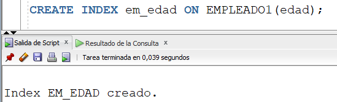
Para activar el monitoreo del índice, ejecutamos...
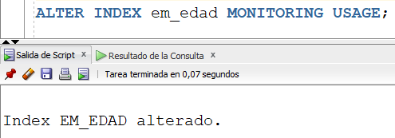
Ahora hagamos una consulta sobre la tabla EMPLEADO1.
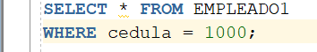
Para saber si el indice fue utilizado al ejecutar la anterior consulta, se hace lo siguiente. Como se puede observar, la columna USED está en NO, lo cual quiere decir que el índice no fue utilizado. Era de esperarse el resultado ya que en el WHERE de la consulta está la cédula y no la edad, campo asociado al índice.
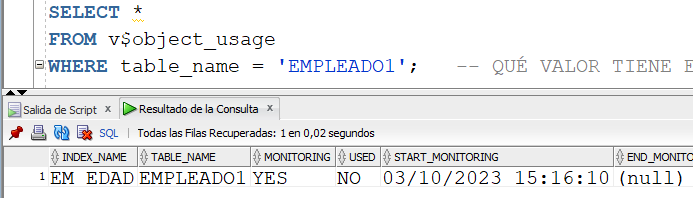
Ahora ejecutemos la siguiente consulta:
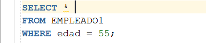
Y volvamos a mirar si con la consulta anterior el índice se usó. Ahora podemos observar que la columna USED está en YES, lo cual significa que para la ejecución de la consulta se usó el índice.
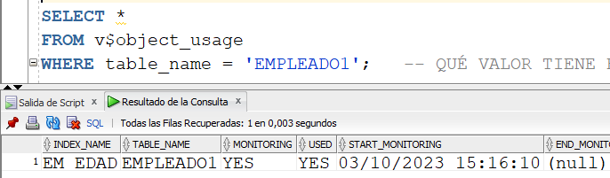
La vista v$object_usage, del diccionario de datos, permite saber el uso de los índices. Si un índice ha sido usado por lo menos una vez, aparece en esta vista.
Para desactivar el monitoreo de un índice se ejecuta:
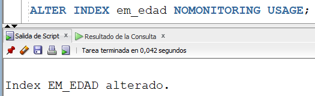
Que sucede en v$object_usage para esta tabla luego de deshabilitar el monitoreo?
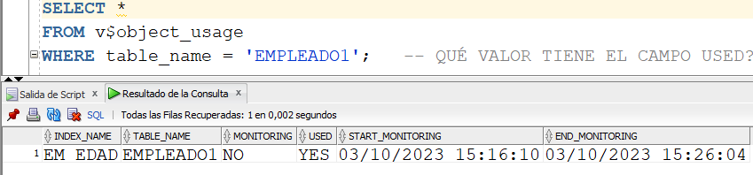
Se puede observar que ya hay una fecha y hora del fin de monitoreo (END_MONITORING).
NOTA: El hecho de que un campo tenga un índice asociado, no significa que SIEMPRE se va a usar dicho índice para consultar por el campo. Eso lo decide el motor en su plan de ejecución.
Reconstrucción de índices.
Para reconstruir un índice, usamos el siguiente comando:
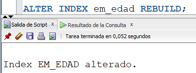Por que razón hay que reconstruir un índice? Con el movimiento de los datos, los índices van actualizándose, sufriendo fragmentación con el paso del tiempo. Al reconstruir un índice eliminamos esta fragmentación y hacemos que su información quede físicamente contigua.
Hay un tip para saber si un índice hay que reconstruirlo. Primero, ejecutemos la siguiente instrucción:
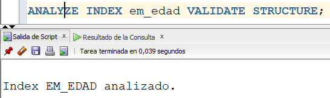
Este comando analiza la estructura actual del índice y graba los resultados en la tabla INDEX_STATS. Por eso, después de ejecutar la anterior instrucción, se procede a consultar dicha tabla:
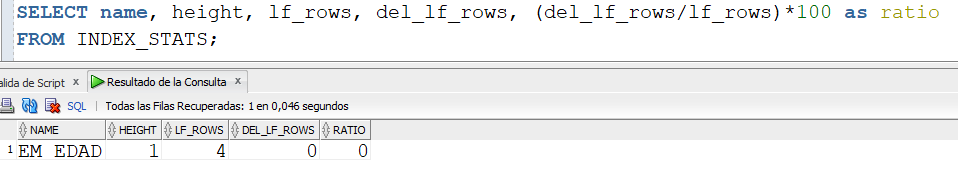
El tip dice que es recomendable reconstruir el índice si:
- El HEIGHT es mayor a 4, o
- El ratio es mayor a 20.
El cumplimiento de cualquiera de las dos condiciones anteriores significa que el índice tiene un grado alto de fragmentación.
Tamaño de un índice.
Para consultar el tamaño de un índice, en megas, ejecutar la siguiente consulta:
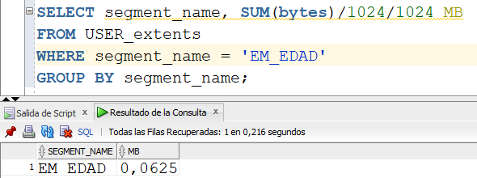
Se puede observar que el índice EM_EDAD mide 0.0625 megas.
Videos:
Gestion de Indices - Parte No. 1
Gestión de Indices - Parte No. 2